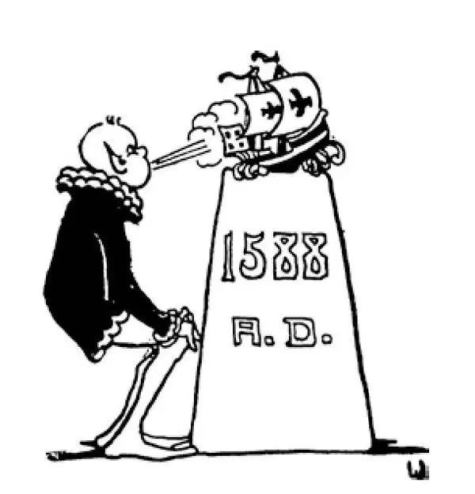

68
Queen Elizabeth
伊丽莎白女王

KING Henry VIII had two daughters.
One was named Mary, and one was named Elizabeth.
Their last name was of course Tudor, the same as their father's although we do not usually think of kings and queens as having last names.
King Henry had a son, also, and he was first to become king after his father died, for though he was younger than his sisters, a boy was supposed to be more fit to rule than a girl. But he didn't live long, and then Mary was the first of the two sisters to become queen.
“Mary, Mary, quite contrary” did not approve what her father had done when he turned against the pope and the Catholic Church. Mary herself was a strong Catholic and ready to fight for the pope and the Catholic Church. In fact, she wanted to have all who were not Catholics, all those who were Protestants, put to death. She thought that all those who did not believe as she did were wicked and should be killed. Like the queen in Alice in Wonderland , she was always saying, “Off with his head!” This seems to us very unchristian, but in those days their ideas about such things were different. Mary had the heads of so many people cut off that she was called Bloody Mary.
Mary married a man who was just as strong a Catholic as she and even bloodier. He was not an Englishman, but a Spaniard, Philip II of Spain, son of Charles V, who had abdicated.
Philip II was much sterner than his father had been. Philip tried to make those who were Protestants, or who were supposed to be Protestants, confess and give up Protestantism. If they did not do so, they were tortured as the old Christian martyrs had been tortured. This was called the Inquisition. Those suspected of being Protestants were tormented in all sorts of horrible ways. Some were tied up in the air by their hands, like a picture hung on a wall, until they fainted from the pain or else confessed what they were told to confess. Some were stretched on a rack, their heads pulled one way and their legs the opposite way, until their bodies were nearly torn apart. Those who were found guilty of being Protestants were killed outright, burned to death, or put slowly to death, so that they would suffer longer. You should know that Protestants were not the only people who suffered under the Spanish Inquisition. A century earlier, Jews were tortured in the same way. Most left Spain to find new homes in North Africa or Europe.
The people whom Philip chiefly persecuted were the Dutch people in Holland. Holland then belonged to his empire, and a great many of the Dutch people had become Protestants.
Now, there was a Dutchman called William the Silent because he talked little but did a great deal. William was furious at the way his people were treated. He fought against Philip and at last succeeded in making his country free and setting up the Dutch Republic. But William the Silent was murdered by order of Philip.
And that's the kind of man Bloody Mary had for a husband.
After Mary Tudor died, her sister, Elizabeth Tudor, became queen. Elizabeth was the strongest of Henry's three children. Elizabeth had red hair and was very vain and loved to be flattered. Many men loved her but she never married, and, as a woman who never marries was called a virgin, she was known as the Virgin Queen.
Elizabeth was a Protestant and was just as bitter against the Catholics as her sister and sister's husband had been against the Protestants.
A relative of Elizabeth was queen of Scotland. Scotland is a country north of England, but at that time it did not have the same ruler as England, and its queen was named Mary Stuart. Mary Stuart, Queen of Scots, was young, beautiful, and fascinating; but she was a Catholic, and so Elizabeth and she were enemies.
Elizabeth heard that Mary Stuart was trying to become queen of England as well as Scotland, so she had her, although a relative, put in prison. In prison Mary Stuart stayed for nearly twenty years and was then at last put to death by Elizabeth's orders. It is hard for us to understand how anyone could have her own relative killed in this cold-blooded way, especially anyone who pretended to be a Christian, but in those times it was a very common custom, as we see when we hear of so many murders committed by the rulers of the people.
Philip II the great champion of the Catholics, made up his mind to punish Elizabeth, his sister-in-law, for killing such a good Catholic as Mary Stuart. So he got together a large navy of very fine ships called the Spanish Armada. All Spain was very proud of this fleet. It was boastfully called the Invincible Armada; invincible means unconquerable .
The Invincible Armada set forth in 1588 to conquer the English navy. Lined up in the shape of a half-moon, the ships sailed grandly toward England.
The English fleet was composed only of little boats. Instead of going out to meet the Armada in regular sea battle as the Spaniards expected, the English ships sailed out and attacked the Spanish ships from behind and fought one ship at a time. The English were better fighters, and their small boats were quicker and more easily managed. They could strike a blow and get away before a Spanish ship could turn around into position to fire. Gradually the English fleet sank or destroyed the big Spanish boats one by one.
Then the English set some old boats afire and started them drifting toward the Spanish fleet. As all boats at that time were of course made of wood, the Spaniards became frightened at these burning piles drifting down upon them, and part of the fleet sailed away. The rest tried to get back to Spain by sailing the long way round, north of Scotland. However, a terrible storm struck them, and almost all the boats were shipwrecked, and thousands of dead bodies were washed up on shore. The great Spanish Armada was destroyed, and with it ended the power of Spain at sea. Spain was no longer the great nation it had been.
At the beginning of Elizabeth's reign, the largest and most powerful country in the world was Spain; at the end of her reign it was England that was the most powerful. Her fleet, which King Alfred had started far back, became one of the largest.
People at that time thought it impossible for a woman to rule as well as a man, but under Elizabeth's rule England in turn became the leading country of Europe. Elizabeth proved that a woman could rule England better than most kings had.
【中文阅读】
国王亨利八世有两个女儿。
一个名叫玛丽，一个名叫伊丽莎白。
她们当然都姓都铎，和她们父亲的姓一样，不过我们通常不会想到国王和王后姓什么。
国王亨利也有一个儿子。他父亲死后，他第一个接任国王，因为尽管他比姐姐们年幼，但是人们都认为男孩比女孩更适合来治理国家。可是他没活多久就死掉了，接着两姐妹中玛丽先成为女王。
“玛丽，玛丽，别树一帜” ［1］ ，她不赞同父亲转而同教皇和天主教会作对时的所作所为。玛丽本人是坚定的天主教徒，随时愿意为教皇和天主教会而战。事实上，她希望把所有不是天主教徒的人，和所有那些新教教徒全部处死。她认为所有那些和她 信仰不同的人都是邪恶的，都该被杀。就像《爱丽丝漫游仙境》中的那个女王一样，她总是说：“砍掉他的头！”在我们看来，这似乎非常不符合基督教教义，但是在那个年代他们对于这些事情的看法是不同的。玛丽让那么多人都掉了脑袋，因此她被称为“血腥玛丽”。
玛丽的丈夫也是像她一样强硬的天主教徒，甚至比她还要凶残嗜血。他不是英国人，而是西班牙人，西班牙腓力二世，就是那个退位的查理五世的儿子。
腓力二世可比他父亲要严厉多了。腓力极力让那些新教徒，或那些被认为是新教徒的人认罪并放弃新教。如果他们不这么做，他们就会遭受到以前基督教殉道士所遭受的那种严刑拷打。这被称为“异端裁判所”。那些被怀疑是新教徒的人受到各种各样的折磨。有些人被捆住手吊在空中，像挂在墙上的画一样，直到他们痛得晕过去或者承认自己被指控的罪行。有些人被绑在肢刑架上向两头拉直，头向一个方向拉，腿向相反的方向拉，直到身体几乎被拽断。那些确认是新教徒而被判有罪的人有的被立刻杀死，有的被烧死，还有的被慢慢折磨而死，这样受罪的时间更长。你应该知道新教徒不是唯一在西班牙异端裁判所受折磨的。一个世纪以前，犹太人早就遭受过同样方式的折磨。大多数犹太人离开了西班牙到北非或欧洲寻找新的家园。
腓力迫害的主要是生活在荷兰的荷兰人。当时荷兰隶属他的帝国，而很多荷兰人成了新教徒。
那时，有个荷兰人被称为“沉默的威廉”，因为他不怎么说话，但是为大家做了很多事情。威廉为他的同胞受到这样的虐待，感到极度愤慨。他奋起反抗腓力，终于使荷兰脱离了西班牙的统治，成为独立的荷兰共和国。但是沉默的威廉却被腓力派来的人谋杀了。
“血腥玛丽”的丈夫就是这样一个人。
玛丽•都铎死后，她的妹妹伊丽莎白•都铎做了女王。伊丽莎白是亨利三个孩子中最刚强的。伊丽莎白长着一头红发，非常自负，喜欢被人奉承。有很多男人爱上了她，但是她一直没有结婚。因为没有结过婚的女人被称为童贞女，所以她被称为“童贞女王”。
伊丽莎白是新教徒，与她姐姐和姐夫极度仇恨新教徒相反，她极度仇恨天主教徒。
伊丽莎白有个亲戚是苏格兰女王。苏格兰是英国北边的一个国家，但是那时候它还没有与英国统一，它有自己的女王，名叫玛丽•斯图亚特。玛丽•斯图亚特，这位苏格兰人的女王，年轻、貌美、迷人；但是她是天主教徒，所以伊丽莎白和她是敌人。
伊丽莎白听说玛丽•斯图亚特正企图吞并英国，于是她不顾亲戚的情面，把她关进监狱。玛丽•斯图亚特在监牢里被关了将近二十年，最后还是被伊丽莎白下令处死了。我们很难理解怎么会有人这么残忍地杀死自己的亲戚，尤其是这个人还自称是个基督徒，但是在那个时代这是非常普遍的惯例，当我们听说了历史上很多统治者都残杀了那么多的人，我们就领会这一点了。
腓力二世作为天主教的强大捍卫者，下决心要惩罚他的妻妹伊丽莎白，因为她竟然杀死了像玛丽•斯图亚特这样虔诚的天主教徒。于是他集结了大批精良船只，组成了一支大型舰队，被称为西班牙舰队。所有的西班牙人都为有这样一支舰队而感到自豪。它被吹捧称为“无敌舰队”，“无敌”的意思是“不可战胜”。
1588年无敌舰队出发去征服英国海军。所有舰船排成一行成半月形，浩浩荡荡地向英国驶去。
英国舰队都是由小船组成的。西班牙人没有料到，英国舰船没有像常规海战那样正面迎战西班牙舰队，而是驶出去，从背面袭击西班牙舰队，而且一次只进攻一条船，各个击破。英国士兵本来就比西班牙士兵训练有素，加之他们的小船速度更快，也更容易操控。他们发起一次进攻，就马上离开，西班牙舰船根本来不及调转方向，向他们开火。渐渐地，英国舰队逐个击沉或摧毁了大型西班牙舰船。
接着英国人点燃几条旧船，让它们漂向西班牙舰队。因为当时所有的船毫无例外都是用木头打造的，所以西班牙人看到这些燃烧的火堆向自己漂过来，惊慌失措了，一部分舰队逃跑了。剩下的船设法从苏格兰北边绕个大弯子回西班牙。但是一场可怕的暴风雨袭击了他们。几乎所有的船都失事了，数以千计的尸体被海浪冲上岸。不可一世的无敌舰队被摧毁了，随之而来的是西班牙海上霸权的终结。西班牙不再有昔日强国的风光了。
伊丽莎白初登王位的时候，世界上最大最强的国家是西班牙；在她统治的末期，英国是世界上最强大的国家。她的舰队，也就是很久以前由阿尔弗雷德大帝开创的海军舰队，成为世界上最强大的舰队之一。
那时人们认为管理国家大事，女人肯定不如男人，但是在伊丽莎白统治之下，英国接替西班牙成为欧洲的第一国家。伊丽莎白证明了女人治理国家可能比大多数国王做得更好。

公元1588年